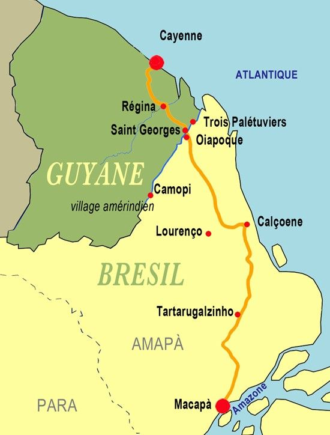

Culture française
Géographie
Région française d'outre-mer - Martinique
La Martinique fait partie de l’archi- pel des Petites Antilles situées dans l'océan Atlantique. Capitale - Fort de France. Sa superficie est de 1100 km² et une population d'environ 328 500 h (densité - 299 h / km²). Avec une agri- culture faiblement développée, la Mar- tinique ne peut satisfaire ses propres besoins. La culture de la canne, autre- fois très développée, est en recul. Malgré le développement des cultures maraîchères, de l'ananas et de la banane, l'agriculture est en difficulté. La plupart des produits alimentaires consommés viennent de la métropole. Le sucre, la mélasse avec le rhum forment la plus grosse part des exportations, tandis que le café, le cacao, la vanille n'occupent qu'une place très modeste parmi les cultures commercia- les, derrière la banane qui est en deuxième position. Les cultures vivrières (maïs, ignames, manioc, patates) sont insuffisantes. L'élevage, par contre, satisfait plus de 75% des besoins locaux en viande et en lait. La canne à sucre couvre plus de 50 % des terres cultivables, la plus grande partie desquelles sont exploi- tées sous forme de grosses propriétés capitalistes appartenant à une minorité infime de la population, tandis que les fermiers, les petits planteurs et un nombre important d'ouvriers agricoles vivent dans des conditions presque misérables. Parmi les ressources principales on cite: le rhum, les bananes, les ananas, le pétrole raffiné, le ciment et le tourisme.
La Guyane
La Guyane, une très vieille colonie (où autrefois il y avait un fameux bagne), a été déclarée D.O.M. par la loi № 82-1171 du 31 décembre 1982. Elle est située au Nord-Est de l’Amérique du Sud. Avec une superficie de 91 000 km² et une population de 73 000 hommes (densité moins d’un homme sur un km²) la Guyane est le plus grand D.O.M. de la France. Le climat équatorial favorise le développement d’une luxuriante forêt qui couvre 82 % du sol. La population, composée de blancs, de noirs, d’indiens et de réfugiés du Sud-Est asiatique (la majorité ce sont des descendants d’esclaves qui avaient fui leurs maîtres), est concentrée dans une étroitement vide d’hommes. La forêt règne sur tout le département et les cours d’eau sont les seules voies de pénétration à l’intérieur. Avec une agriculture qui ne couvre pas ses besoins et une forêt mal exploitée elle vit suspendue au succès ou à l’insuccès du programme Ariane-espace qui conditionne le maintien de la base de Kourou. Aujourd’hui l’attention de la Métropole est attirée par les possibilités d’exploiter les richesses minières, la beauxite, les forêts, les crevettes du littoral. On veut y introduire des plantations d’avocatiers, de pamplemoussiers, de citronniers etc. Le Centre d’Etudes Spatiales, à Kourou, semble avoir un brillant avenir. Des tirs de fusées sont possibles vers l’Est sans risque grave en cas de retombée. La proximité de l’Equateur permet de placer plus facilement des satellites sur l’orbite géostationnaire très recherchée pour les télécommunications. Les succès de la fusée européenne «Ariane» annoncent une activité soutenue pour les décennies prochaines. Les T.O.M. sont au nombre de six. Les statuts actuels de la majorité des T.O.M. ont été adoptés par les lois du 29 juillet 1961, du 28 décembre 1976 et du 12 juillet 1977.
Le Canada - pays francophone

Le Canada, le plus grand pays d’Amérique du Nord et le deuxième plus grand pays du monde, ne compte « que » 35 millions d’habitants. Cela en fait un pays très peu peuplé, mais prospère. Le Canada est également une destination de voyage populaire, tant pour les voyageurs d’affaires que pour les touristes.Il y a des similarités entre les jours de fêtes du Canada et de la France, en raison du grand groupe d’habitants chrétiens, mais la France en fête plus. Tout comme les États-Unis, le Canada a aussi Thanksgiving, qui n’est pas célébré le même jour.Vous aimez les sports d’hiver ? Les montagnes canadiennes sont l’endroit où il faut être. De plus, les chutes du Niagara ne doivent pas être manquées lors d’un séjour au Canada ; ces chutes d’eau font environ cinquante mètres de haut et près de sept-cents mètres de long. La Tour CN à Toronto vaut également la peine d’être visitée pendant vos vacances au Canada. Cette tour de plus d’un demi-kilomètre de haut offre une vue spectaculaire sur la ville.
Provence–Alpes–Côte d’Azur - région française

Le Midi C’est ainsi qu’on a baptisé le sud-est de la France. Il bénéficie d’un climat
méditerranéen
: les étés sont chauds et secs, le ciel est toujours bleu, les hivers sont doux. Un vent
violent, le
mistral, balaie parfois la région. Le Midi, c’est le pays des oliviers, des figuiers, des
mimosas,
de la lavande…et de la pétanque ! Deux ensembles géographiques le composent : - La Provence - La
Côte d’Azur : c’est la Riviera, paradis du tourisme, constituée de plages de sable et de criques
et
de villes prestigieuses comme Cannes, Nice, Grasse, Antibes…
Les villes du Midi La région compte :
- Trois des villes les plus peuplées de France
(Marseille,
Toulon, Nice).
- Cannes et son rayonnement international avec le festival du film.
Son point fort : le tourisme - Agriculture : cultures maraîchères, cultures de fleurs et de
lavande,
vignobles.
Activité traditionnelle : les parfums (à Grasse).
- Transports ♦ Marseille est le premier port français. ♦ Le TGV méditerranée relie Paris à
Marseille
en 3 heures (1000 km).
♦ L’aéroport de Nice Côte d’Azur est le 2e aéroport français.
Le Corbusier est l’un des premiers architectes à construire dans le monde entier.Il a été à
la
fois
acclamé pour la qualité sculpturale de ses espaces de vie de forme libre et critiqué pour la
création de blocs de logements sociaux en béton après la Seconde guerre mondiale.
Le tourisme concerne le tourisme d’affaires, le tourisme culturel, le tourisme de loisirs et
sportif, le tourisme thermal. La mer et la montagne permettent de faire se succéder saisons
d’été et
saisons d’hiver. Les spécialités régionales : La cuisine à l’huile d’olive, l’ail, les herbes de
Provence ; L’aïoli (sauce à base d'ail et huile d'olive), la soupe au pistou, les olives, les
anchois, la tapenade (préparation à base de petit morceaux d'olives broyées). La bouillabaisse
de
Marseille (plat à base de poissons de roche, de sauces et de légumes), la salade niçoise, la
ratatouille niçoise, la panisse (galette de farine de pois chiche), Les melons de Cavaillon Les
fromages : fromages de chèvre Les vins : les rosés de Provence Apéritif : le pastis (boisson
alcoolisée à base d'épices et d'anis)
Marseille - ville de France

Marseille est, après Paris, la deuxième ville la plus peuplée de France. Ses habitants sont
appelés
les Marseillais, est la plus ancienne implantation urbaine de France. - Elle est également le
premier port de France. - Elle abrite l'un des clubs les plus titrés du football français,
l'Olympique de Marseille. La ville s'est développée autour de l'ancien port grec devenu « Le
Vieux-Port », notamment au cours de la deuxième moitié du XIXe siècle, période pendant laquelle
elle
a connu un développement important, stimulé par la croissance du commerce vers le nouvel empire
colonial français : l'Algérie, le Levant et l'Extrême Orient. Marseille cosmopolite - Marseille
a
toujours été le « carrefour du monde ».
Notre-Dame de la Garde, construite en 1870, culmine à 162 m d’altitude sur les hauteurs de
Marseille, au Sud du Vieux-Port. Au fil des années, elle est devenue, dans le cœur des
Marseillais,
la protectrice de la ville et porte le surnom de « Bonne Mère », en raison de la présence d'une
immense statue dorée de la Mère à l'Enfant de plusieurs mètres de haut. Elle est l'objet de
toutes
les demandes des citadins qui lui font des présents sous la forme de cierges, d'ex-voto, de
processions qui ont lieu de 15 août lors de l'Assomption, et même de maillots à La basilique
Notre-Dame de la Garde. l'effigie de l'Olympique de Marseille !
SOPRANO - Rappeur français apprecié surtout par les jeunes, qui fait connu le français dans
le monde par ses chansons qui
traitent comme sujet les problèmes sociaux.
Eveniments historiques
La Révolution française

Le 14 juillet 1789, la population parisienne se soulève et prend la Bastille. Ce jour est devenu
celui de la fête nationale.
Avant 1789 le pouvoir politique appartient au roi seul. Avec la Révolution, la politique
devient, en
principe, la chose de tous: l’homme est un citoyen! En proclamant la souveraineté de la nation,
la
Révolution fait naître un courant libéral qui conduit, plus tard, au suffrage universel et à la
démocratie. Elle détruit la société de l’Ancien Régime: abolit les privilèges, offre à tous
l’admission à tous les emplois et l’égalité devant les impôts. Elle accentue la laïcisation de
l’Etat et enlève à la société son fondement religieux: l’Eglise perd le monopole de
l’enseignement.
La Révolution rénove l’enseignement secondaire par la création des grandes écoles (l’Ecole
Normale
Supérieure, l’Ecole Polytechnique etc.). La prise
de la
Bastille est considérée comme le début de la Révolution et la fin de la monarchie absolue:
Abolition
des privilèges des nobles.
- Déclaration des droits de l’homme et du citoyen, inspirée des
doctrines
des philosophes des Lumières.
- 1792 : l’Assemblée prononce la chute de la royauté et la
proclamation de la République. 1792-1799 : après des années de troubles politiques et de
guerres,
qui ont vu le roi Louis XVI condamné à mort et guillotiné, le général Bonaparte prend le pouvoir
par
un coup d’Etat en 1799.
S'informer plus
La Guerre de Cent Ans
Entre 1337 et 1453 c’est une longue guerre
entre les Anglais et les Français appelée dans l’histoire la Guerre de 100 ans. Au début du 15-e
siècle,
les Anglais ont occupé tout le nord de la France. En
1422, après la mort de Charles VI, les Français
voulaient couronner le jeune Charles VII à Reims
comme tous les autres rois de France: sans cette
cérémonie, il n’était pas vraiment le roi. Mais cela
n’était pas possible, parce que les Bourguignons,
alliés des Anglais, occupaient la ville.
Dans le petit village de Domrémy, en Lorraine,
une jeune paysanne de 17 ans, Jeanne d’Arc, a
entendu les voyageurs raconter que les Anglais
avaient occupé une grande partie de la France.
Depuis ce jour-là, elle pensait sans cesse à son
malheureux pays. Un jour, elle a entendu dans le
ciel des voix qui lui disaient: «Jeanne, il faut chasser les Anglais de France, tu dois aller
voir
le roi et
libérer le pays.»
En février 1429, Charles VII se trouvait au château de Chinon, en Touraine. Jeanne a obéi aux
voix et après un voyage long et diffi cile, elle est arrivée à Chinon. D’abord, le roi ne
voulait
pas lui
parler: il pensait qu’elle était folle. Enfi n, au bout de 3 jours, elle a réussi à entrer au
château. Le roi
et les nobles voulaient se moquer d’elle: un noble a mis les vêtements du roi. Mais Jeanne est
allée
directement vers Charles VII et lui a dit: «Au nom de Dieu, vous êtes le roi. Donnez-moi une
armée
et
je vais libérer la France». Le roi ne comprenait pas comment Jeanne a pu le reconnaître. Il
pensait
que c’était Dieu qui lui avait envoyé cette jeune paysanne et il lui a donné une armée.
Depuis plus de six mois, les Anglais faisaient le siège d’Orléans. En mai 1429, Jeanne d’Arc est
arrivée avec son armée. La bataille a été très dure. Mais l’exemple de la jeune fi lle a donné
du
courage aux soldats français et au bout de 3 jours, ils ont libéré la ville.
En juillet 1429, Jeanne est entrée dans Reims avec son armée. Le roi Charles VII a été couronné
dans
la grande cathédrale. Mais à la cour il y avait des gens qui n’aimaient pas Jeanne d’Arc. Les
militaires
étaient jaloux de ses succès et quelques nobles, amis des Bourguignons, disaient qu’elle était
sorcière.
En 1430, Jeanne d’Arc marchait vers Paris, mais à Compiègne, elle est tombée entre les mains des
Bourguignons, qui l’ont vendue aux Anglais. À Rouen, on lui a fait un procès, et elle a été
condamnée
comme sorcière. Le roi de France, n’a rien fait pour Jeanne, qui le 30 mai 1431, est montée sur
le
bûcher.
En 1920, la jeune Lorraine devient sainte Jeanne d’Arc. Elle est aujourd’hui un symbole de la
nation
française. Sa statue se trouve dans beaucoup de villes de France. À Orléans, chaque année, en
mai,
la ville donne une grande fête et on peut voir Jeanne d’Arc qui passe dans les rues sur son
cheval.
Les systèmes français
Les symboles de la République française

Le drapeau français
Bleu. Blanc. Rouge.
Ces couleurs, tu les vois pendant les matchs de foot, dans ta mairie ou ton école. Ce sont
les
couleurs du drapeau français. Sais-tu pourquoi ? Le blanc, c'était la couleur du roi. Le
bleu et
le rouge étaient les couleurs de la ville de Paris. Imaginée pendant la Révolution
française, en
1789, l'alliance des trois couleurs était donc le symbole de l'alliance du roi et du peuple
et
reste le symbole d'une France unie.
"Liberté, Égalité, Fraternité"
Ces trois mots sont la devise de la République française. Ensemble, ils représentent les
valeurs
qui nous unissent en tant que Français.
En tant que Français on pense que chacun d'entre nous naît libre et à égalité avec les
autres.
On pense aussi qu'on doit, pendant notre vie, faire preuve de fraternité, aider les autres.
Ces
valeurs font notre fierté et nous représentent partout dans le monde.
La Marseillaise de Rouget de Lisle
"Allons enfants de la patrie,
Le jour de gloire est arrivé !"
Si tu connais ces paroles c'est parce que c'est ainsi que commence notre hymne national : le
chant qu'on entonne pour représenter la France (dans des cérémonies ou des compétitions
sportives par exemple). Il a été composé pendant la Révolution française, quand les Français
se
déchiraient et alors qu'ils devaient s'unir pour faire face aux attaques de pays ennemis.
Aujourd'hui encore quand on le chante on dépasse ce qui nous divise et on se rappelle qu'on
est
tous Français.
Lire plus au sujet
Les institutions politiques de la République Française

Les institutions de la Ve République sont régies par la Constitution du 4 octobre 1958.
Cette
Constitution définit le rôle des institutions et leurs
relations. La France est une République - un État
dans lequel la communauté des citoyens exprime ses volontés directement ou par l’intermédiaire
de
délégués élus. La France est une
République indivisible, laïque, démocratique et
sociale.
Les traits dominants de la vie institutionnelle française sont: la séparation des pouvoirs
en exécutif, législatif et judiciaire. Le régime
de la Ve République est de type parlementaire,
puisque l’Assemblée Nationale peut renverser
le gouvernement, mais il est aussi présidentiel
car il donne un rôle très important au Président
de la République. Le pouvoir exécutif est partagé
entre le Président de la République et le Premier
ministre.
Le Président de la République est Emmanuel
MACRON, né le 21 decembrie 1977 à Amiens. Il a
été élu le 14 mai 2017 pour un mandat de 5 ans.
Il réside au Palais de l’Élysée.
⭐Le président de la République est le chef de l’Etat. Il est élu tous les 5 ans directement par
l’ensemble des Français. Il réside au palais de l’Elysée. Il veille au fonctionnement régulier
de l’Etat, au respect de l’indépendance nationale et des traités. Il nomme le Premier ministre,
préside le Conseil des ministres et peut dissoudre l’Assemblée nationale. Il est le chef des
armées, conduit la politique extérieure et, en cas de crise grave, peut disposer des pleins
pouvoirs.
⭐Le gouvernement – c’est-à-dire l’ensemble des ministres – avec à sa tête le Premier ministre
conduit la politique de la nation. Il a sous son autorité l’administration, la police et
l’armée. Il est responsable devant le Parlement. Il réside à l’hôtel Matignon.
⭐ Le Parlement comprend deux assemblées, l’Assemblée nationale et le Sénat. 557 députés et 321
sénateurs discutent et votent les lois.
Le système éducatif français
Le système éducatif en France Tout d’abord, il est possible de mettre les enfants à la crèche quand ils n’ont que quelques mois. Mais la crèche ne fait pas partie du système éducatif français à proprement parler! En effet, le système éducatif en France commence réellement au primaire. 1. Enseignement Primaire Le primaire est divisé en deux parties: l’école maternelle et l’école élémentaire. Il regroupe les enfants de 3 ans à 10 ans à peu près. PRIMAIRE 2. Enseignement Secondaire Vers 10-11 ans, les enfants passent dans le secondaire et y restent jusqu’à 17-18 ans. À partir de là, ils vont avoir plusieurs professeurs, un différent pour chacune des matières enseignées. Le secondaire se divise en deux: le collège et le lycée. À la fin de la dernière année du collège, en 3e, les élèves passent ce qu’on appelle le Brevet des collèges. Il s’agit d’un petit examen général avec des connaissances basiques. Théoriquement, tous les Français doivent avoir ces connaissances, l’école étant obligatoire jusqu’à 16 ans en France. À la fin de la dernière année du lycée, en terminale, les élèves passent un examen très important: le Baccalauréat (= appelé aussi “bac”). 3. Enseignement Supérieur Enfin, le niveau le plus haut du système éducatif français s’appelle logiquement l’enseignement supérieur. Il existe également des systèmes publics et des systèmes privés. Tout d’abord, il y a l’université appelée également la “FAC”. Les universités sont normalement publiques.
Fêtes et traditions
Le 14 juillet - Fête nationale

Le 14 juillet, c'est aujourd'hui dans l'esprit des Français le défilé
militaire le plus solennel, sur les Champs Elysées, en présence du chef de l'État. C'est aussi
une
fête populaire avec ses bals, ponctuée de feux d'artifice dans toutes les communes de France.
Mais
le 14 juillet, c'est surtout la fête républicaine, le symbole de la fin de la monarchie absolue,
de
la naissance de la Nation souveraine puis bientôt de celle de la République. La fête nationale
est
un moment où les citoyens peuvent ressentir leur appartenance à la nation républicaine parce que
cette fête trouve sa source dans l'histoire de la naissance de la République. Le 5 mai 1789, le
Roi
convoque les États généraux pour recueillir leurs doléances; mais l'assemblée du Tiers, qui
représente la bourgeoisie, se proclame Assemblée nationale constituante. Les députés font, le 20
juin 1789, le serment du Jeu de Paume de "ne jamais se séparer jusqu'à ce que la Constitution
fût
établie". Cette contestation des députés du Tiers trouve un écho dans l'opinion publique.
Le peuple
de Paris se soulève et décide de marcher sur la Bastille, prison d'État qui symbolise
l'absolutisme
de l'Ancien Régime. Le 14 juillet 1789, prend tout de suite une portée historique symbolique;
c'est
la preuve que le pouvoir du Roi n'est plus absolu et que ce pouvoir doit être limité par une
séparation des pouvoirs. Le 16 juillet, le Roi reconnaît la cocarde tricolore: la révolution est
faite. La prise de la Bastille symbolise pour tous les Français la liberté, la lutte contre
toutes
les formes d'oppression. Ce jour fut déclaré "Fête Nationale" le 31 janvier 1879.
La Fête de Toussaint - une fête réligieuse

La fête du 1-er novembre a une origine très lointaine puisqu’en fait elle
provient des Celtes. En effet, ceux-ci divisaient l'année en deux saisons, l'hiver et l'été. Le
premier novembre était une date très importante puisqu'ils fêtaient le début de l'année. C'était
donc une fête de passage; la fin de l'été marque le - 299 - tes: fêtes de la famille ou
manifestations familiales à l'occasion de la fête nationale du 14 juillet par exemple, avec une
forte contribution des enfants. Samain était aussi la fête des morts, ou plus exactement de la
communication entre les vivants et les morts. Ainsi cette nuit, les tombes sont ouvertes et le
monde
visible et invisible communiquent: les habitants de l'Autre monde peuvent faire irruption sur la
surface de la terre, et les humains peuvent s'engager dans le domaine des dieux, des héros et
des
défunts. Cette conception des relations entre morts et vivants a duré très longtemps. Ainsi,
dans
les pays anglo-saxons, la fête de la Toussaint est accompagnée de la célèbre manifestation
folklorique Halloween, où les morts, symbolisés par la fameuse citrouille évidée dans laquelle
on a
placé une chandelle, viennent taquiner les vivants.
A la fin du XIX-ieme siècle, le jour de
la
Toussaints et aussi le jour des Morts, les enfants se promenaient en balançant des betteraves
évidées ou des pots à fleurs remplis de braises allumées, sur lesquelles ils faisaient brûler
l'encens et ils demandaient aux passants: un cent (pièce de deux centimes) pour les pauvres
âmes.
Dans d’autres régions, le soir de la Toussaint, les enfants évidaient une betterave ou une
citrouille dans laquelle ils pratiquaient des entailles simulant les yeux, un nez, une bouche.
Une
chandelle éclairait à l'intérieur cette tête de mort que les enfants plaçaient au bord du chemin
en
sollicitant des passants quelque monnaie "pour les âmes". Il fallait aussi se garder de balayer
et
de laver les chambres et la cuisine parce que les âmes des trépassés reviennent sur terre dans
les
demeures qu'elles habitèrent. De même, il ne fallait pas frapper avec des bâtons sur les haies
et
les buissons, parce que les âmes sont dans les buissons. Pour l'Eglise catholique, la Toussaint
n'est autre chose que la fête de Tous les Saints, c'est-à-dire de la Communauté des vivants et
des
morts.
La Sainte Catherine
La Sainte Catherine se célèbre tous les ans le 25 novembre. Ce jour là, les catherinettes
(célibataires de plus de 25 ans) portent un chapeau jaune ou organisent une fête et les petites
filles s’offrent des cartes de Sainte Catherine. Selon la tradition, le 25 novembre est
l’occasion
de célèbrer les fillettes mais aussi les
catherinettes (les femmes de 25 ans qui ne sont pas encore mariées). Les fillettes s’offrent des
cartes de Sainte Catherine et les catherinettes organisent une petite fête p
ur trouver leur futur mari.
Si cette fête reste populaire dans le Nord et l’est de la France, les catherinettes ne sont plus
beaucoup célèbrées en France. Et pour cause, plus de la moitié des françaises ne sont pas
célibataires et vivent en couple depuis de nombreuses années.
Pour reconnaître une catherinette, la tradition veut qu’elle porte toute la journée un chapeau
extravagant jaune et vert. Le vert pour l’espoir et le jaune pour la sagesse. C’est pourquoi les
maisons de couture, certains magasins de mode continuent de proposer
Le Premier avril Naguère, le Premier avril était l'occasion de se moquer gentiment des pêcheurs qui rentraient bredouilles sans prendre un poisson: on jetait à la rivière quelque hareng - poisson d'avril! Avril, le soleil quitte le mois des poissons. Et le poisson amorce sa période de reproduction. En fait, il faut remonter à Charles IX, qui décida en 1564 à faire commencer l'année en janvier. Avant lui la nouvelle année débutait le 25 mars. L'on s'offrait comme aujourd’hui quelque cadeau pour fêter l'événement. La date changea et la coutume persista, mais on en vînt rapidement à faire de faux cadeaux, raconter des blagues, propager des fausses nouvelles. L'unique but étant de faire une farce. Si la date avait changé, le poisson commençait toujours sa période de reproduction. De plus, n'oublions pas que cette période correspond à celle du carême. On mange maigre et le poisson est la seule viande permise. Et plus facile à l’accrocher qu'un boeuf ! C’est pour la France. Cette pratique a lieu aussi en Belgique, Allemagne, Angleterre. En Ecosse, à All Fool's Day le but est de recevoir un coup de pied dans le postérieur, ce qui porte bonheur. Les passants arborent donc des panneaux incitatifs (un coup de pied, s’il vous plaît). Jour de blagues donc, ou plutôt de mauvais tours. Les fausses nouvelles vont bon train entre amis, en famille, au bureau. On accroche un poisson d'avril dans le dos de sa victime. Que l'on soit grand ou petit. En feignant de trouver une tache, paf !, et on se fait prendre. Le poisson est le plus souvent en papier. Colorié, découpé et accroché à un fil ou à du ruban adhésif. Le mal sévit en priorité à l'école, y compris au dos des professeurs, au tableau et partout dans la classe avant les cours. A la sortie, les passants sont contaminés aussi. Mais attention, il faut jouer son tour avant midi, pour porter bonheur, sinon on pourrait bien en être soi-même victime!
Le 1er mai
1er mai : fête du travail et jour de revendication sociale En France, il faut attendre le 23 avril 1919 pour que le Parlement français, sous l’impulsion de Georges Clémenceau, écoute les revendications des travailleurs et adopte la journée de travail de 8 heures. En 1941, le maréchal Pétain fait du 1er mai un jour non travaillé mais payé. Mais il en change la symbolique pour gommer son aspect revendicatif. La « fête des travailleurs » devient la « fête du travail et de la Concorde sociale ». Après la Seconde Guerre mondiale, en 1948, une loi entérine définitivement le 1er mai comme un jour férié, chômé et payé. La fête du travail telle qu’on la connaît désormais est née. Qui célèbre le 1er mai aujourd'hui ? La fête du travail garde encore et toujours un caractère politique : Syndicats et partis de gauche descendent dans la rue pour porter leurs revendications. Depuis une trentaine d’années, l’extrême droite tente de son côté de s’approprier cette date en honorant Jeanne d’Arc. En Amérique du Nord, on célèbre plutôt le Labor Day le premier lundi de septembre, Le 1er mai est férié dans au moins 107 pays du monde, dont la quasi-totalité de l’Europe.
Personnalités
Jeanne d’Arc
Jeanne d’Arc Jeanne d’Arc - pureté, douceur, bonté héroïque, Jeanne d’Arc est l’héroïne française du temps de la guerre de Cent Ans. Cette jeune paysanne a pu se mettre à la tête des troupes françaises et remporter des victoires sur les envahisseurs anglais; mais elle a été trahie, vendue aux Anglais, jugée comme hérétique et sorcière et brûlée vive à Rouen le 29 mai 1431. Tout étonne dans l’histoire de Jeanne d’Arc. A 17 ans elle entre dans l’histoire de la France. En deux ans cette jeune fille de la campagne qui, selon la chronique ne sait ni lire, ni écrire, a su se faire écouter des rois et des soldats, commander une armée, gagner des batailles. Elle est morte, mais sa figure grandit au coeur des Français. Au XVe s., l’Eglise décide de la reconnaître comme sainte.
Personalité historique - Napoléon Bonaparte

Lire plus dans l'article
Napoléon Bonaparte est un
militaire et homme d'État français, premier empereur des Français du 18 mai 1804 au 6
avril 1814. Le Code civil, élaboré sous sa surveillance personnelle, confirme l’abolition des
privilèges, affirme le droit de propriété, renforce l’autorité du père au sein de la famille,
celle du patron sur l’ouvrier. Il fait de la femme mariée une éternelle mineure. En cas de
conflit, le patron est cru sur sa simple affirmation, l’ouvrier sur preuve écrite. Les ouvriers
sont privés du droit d’association et de grève, ils sont traités en suspects par le Code pénal.
Napoléon a conservé, en partie, l’héritage révolutionnaire. Pour former une élite docile et
efficace capable de diriger la France, Bonaparte a remplacé en 1802 les écoles centrales par les
lycées. Puis il a fondé, en 1806, l’université impériale et lui a accordé le monopole de
l’enseignement. Le Concordat de 1801 a mis le clergé sous le contrôle du gouvernement, a redonné
un statut officiel à l’Eglise mais n’a pas refait du catholicisme une religion d’Etat.
Napoléon
a consolidé l’unité du territoire et de la nation. Pour gérer la France, il crée une
administration hiérarchisée de fonctionnaires nommés, payés et contrôlés par le pouvoir central.
À la tête du département (circonscription fondamentale) se trouve le préfet qui ne dépend que du
gouvernement dont il est l’oeil dans la province. Au-dessous du préfet, chargé de faire
appliquer partout les mêmes lois, il y a un escalier d’une administration hiérarchisée où tout
est rattaché à Paris. Cette structure centralisée a duré jusqu’au mois de mars 1982. Ainsi les
grands ensembles de lois du Consulat et de l’Empire ont pour longtemps organisé les changements
essentiels hérités des dix années révolutionnaires.
Une personnalité du théâtre - Molière

Molière, de son véritable nom Jean-Baptiste Poquelin, est une des personnalités les plus marquantes de l’histoire française. Et pour cause ! Il prête son pseudonyme au surnom de la langue française dans le monde entier : la « langue de Molière ». A la fois dramaturge et comédien, Molière était la référence théâtrale du XVIIe siècle ! A l’époque, Molière faisait partie de la troupe officielle du Roi Louis XIV : ses représentations se faisaient donc devant les bourgeoisies européennes. Molière était d’ailleurs un des premiers artistes à utiliser le français tel qu’on le connaît aujourd’hui : il reste donc une figure majeure du maniement de la linguistique française ! Son approche du lexique et du vocabulaire français était ce qui faisait la force de ses pièces.n effet, Molière aimait jouer avec la langue française, les jeux de mots et les figures de style : les discours de ses personnages étaient toujours grandiloquents et bourrés d’humour.Grâce à sa maîtrise de la terminologie de notre langue officielle, Molière contribua à promouvoir le français au-delà des frontières de l’Hexagone ! Bien après le dramaturge français, la langue française a connu de nombreuses réformes orthographiques.
Le théâtre tragique contemporain : Rhinocéros, d'Eugène Ionesco

Eugène Ionesco (1909-1994) est considéré comme l’un des plus grands dramaturges français. D’origine roumaine, il prend la nationalité française en 1950. Chef de file de ce que l’on a appelé le « nouveau théâtre » ou théâtre de l’absurde, avec Samuel Beckett, il a écrit de nombreuses pièces à succès, parmi lesquelles nous trouvons La Cantatrice chauve, Les Chaises, La Leçon, Le Roi se meurt et Rhinocéros. Avec Rhinocéros, Ionesco a le désir de dénoncer toutes les formes de totalitarisme. La pièce paraît en 1957 et est représentée pour la première fois à Düsseldorf, en 1959, où le public allemand acclame cette critique du nazisme.La pièce est composée de trois actes. Les thèmes • Dénonciation des totalitarismes et des dictatures (nazisme, fascisme, stalinisme, ...) Face à ce qu’il considère comme une menace et un cauchemar obsédants, Ionesco défend les valeurs auxquelles il est attaché : l’amitié, la liberté, les Droits de l’homme, la démocratie. Il s’attaque aux valeurs du totalitarisme : la glorification du chef, l’autorité, la force. (La pièce a d'ailleurs été interdite en URSS et en Roumanie soviétique). • Satire des comportements humains face à la montée d’une idéologie Ionesco fustige les phénomènes de groupe, dénonce l’instinct grégaire : il prouve qu’au départ, le groupe humain est étonné, puis effrayé, avant de se laisser entraîner, justifiant l’injustifiable (les massacres, les exterminations, les pogroms, …). Ceux qui résistent sont très peu nombreux. • Dénonciation de l’uniformisation d’une société Tout le monde finit par se ressembler et par dire la même chose. Lire plus
Charles Aznavour

La carrière de Charles Aznavour a de quoi faire tourner la tête : avec plus de 1200 titres à son actif, le chanteur français d’origine arménienne reste une icône de la chanson hexagonale. Aznavour parle souvent de notre belle capitale Paris, ce qui plait beaucoup aux étrangers ! Son premier succès, Je m’voyais déjà, parle d’ailleurs du rêve parisien, puisqu’il évoque un homme qui souhaite trouver le succès dans la Ville Lumière. Charles Aznavour tente également de contextualiser ses chansons en abordant l’architecture française, en donnant des noms de rues parisiennes et en évoquant notre culture si particulière. Pour le chanteur, il est également impératif de prendre en compte les valeurs de la république française ! En effet, Aznavour évoque l’égalité entre les hommes (notamment dans Comme ils disent) afin que chacun et chacune puisse se retrouver dans ses paroles. Si vous souhaitez apprendre le français, les chansons d’Aznavour vous permettront de comprendre la diversité et les valeurs du pays à l’emblème du coq !
Eugen Doga - un créateur universel
Le compositeur Eugen Doga qui a écrit de la musique pour des films et des spectacles, de nombreuses symphonies et cantates, cinq quatuors à cordes, des chansons et des romances immortelles, est incontestablement une cime de la culture moldave. Le domaine dans lequel il s’est aµrmé et qui lui a apporté la renommée internationale est l’art de la composition.Il a écrit la musique pour plus de 200 films produits en Moldova, en Russie, en Roumanie et dans d’autres pays du monde. Sa musique pour les films Lăutarii, O șatră urcă la cer, Ana Pavlova, Gingașa și tandra mea fiară, Patul lui Procust ainsi que pour le ballet Luceafărul sont des pièces immortelles du patrimoine culturel national. En écoutant sa musique, on voyage à travers l’univers, on a l’impression d’admirer de splendides paysages, de se déplacer dans d’autres dimensions spatiales et temporelles. Or, on ne peut écouter sa pièce Pârâiaşul sans „entendre” le murmure d’un ruisseau, ni la superbe chanson Codrii Moldovei sans se „retrouver” au milieu des forêts sé- culaires moldaves. Sa chanson Oraşul meu cel alb est devenue l’hymne de la capitale moldave. Des patineurs de divers pays du monde ont gagné des médailles d’or sous les airs de la célèbre valse pour le film Gingaşa şi tandra mea fiară . L’an 2007 a été décrété en République Moldova Année Eugen Doga, en signe de reconnaissance pour la contribution précieuse du compositeur au développement de la culture et de la musique moldave. l a été décoré de l’Ordre de la République de Moldova (1997), de l’Ordre L’étoile de la Roumanie, de la médaille Mihai Eminescu et de la médaille d’or L’homme du XXe siècle.
Un génie de la peinture - Eugène Delacroix

Eugène Delacroix (1798- 1865) est un autre génie de la peinture française. Il exposa au salon de 1822 son Dante et Virgile qui rompait scandaleusement avec les traditions académiques. De caractère plutôt romantique, sa technique picturale était tout à fait individuelle. Son œuvre, diverse et riche, constitue un ensemble harmonieux, éclatant et superbe, plein de feu et de génie. Delacroix fut de sa vie nommé commandeur de la Légion d’honneur. Il eut le mérite d’être agité par les fièvres de La Liberté guidant le peuple de son époque et d’en représenter l’idéal tourmenté avec une poésie, une force et une intensité autant singulière qu’admirable.
Vive la liberté
En juillet 1830, le roi Charles X (successeur de Louis XVIII) fait adopter des ordonnances qui suppriment notamment la liberté de la presse pour freiner la montée de l’opposition. Le peuple de Paris monte sur les barricades pour protester contre ces ordonnances et la protestation se transforme en véritable révolution. Les émeutes des 27, 28, et 29 juillet que l’on appelle “Les trois Glorieuses”, vont amener le roi Charles X à abdiquer et à partir pour l’exil. Il est remplacé par Louis Philippe. La violente répression de cette insurrection provoquera de vives réactions notamment chez les intellectuels et les artistes, Eugène Delacroix et Victor Hugo en font partie. Il y a 4000 barricades dans Paris à ce moment là, et c’est la première fois que Delacroix peint ce qu’il a vu. Alors il peint une image dont la plupart des éléments sont réels, observés : des cadavres livides dépouillés de leurs vêtements et de leurs armes, des ongles noirs, du sang, etc. Ainsi, la “Liberté” est une allégorie, c’est-à-dire une idée, elle est incarnée physiquement par une femme du peuple : grande, les joues rouges, les bras puissants…
Le peintre Gustave Courbet

Gustave Courbet (1819-1877) est le peintre qui remet tout en cause. Le premier, il a proclamé dans la peinture la primauté de la matière, l’existence indépendante de l’objet par rapport à l’artiste, la nécessité absolue de peindre d’après la nature, ce que l’œil a vu et rien que ce qu’il a pu voir. Par là, il porte la responsabilité de toute la peinture française qui lui succéda et qui résume les traits de base de l’impressionnisme. L’apparition du phénomène Courbet dans la peinture coïncide avec l’éveil de l’ouvrier, ce géant de son siècle. C’est de là que vient le matérialisme de Courbet. Les Lutteurs, le Désespéré, L’Homme du chien noir, Un enterrement à Ornans, L’Homme blessé etc. ne représentent qu’une modeste partie de ses œuvres. Les Casseurs de pierre.
L'impressionniste Edouard Manet

Un autre représentant du courant impressionniste est Edouard Manet (1832-1883). On regarde ses toiles avec une sensation d’unité et de force. La première toile a été le Buveur d’absinthe qui n’est pas encore très réussie. Le peintre se cherche encore. Ensuite viennent le Chanteur espagnol et l’Enfant à l’épée. Ces peintures sont fermes et solides, très délicates d’ailleurs, ne blessant en rien la vue faible de la foule. Au Salon des Refusés en 1863, Manet trouva des défenseurs, même des admirateurs, avec son Déjeuner sur l’herbe. Ce qu’il faut voir dans le tableau, ce n’est pas un déjeuner sur l’herbe, c’est le paysage entier avec ses vigueurs et ses finesses, avec ses premiers plans si larges et solides, ses fonds d’une délicatesse si légère.